한국어 카피 버전 · Stitch(Gemini 3 Pro) 생성 · 3방향 × 7화면 = 21스크린. 슬로프 체크 전량 통과. 결함 위치는 fix 배지로 표시 — 상세는 flows-verification.md.
먹 배경 + 한지 세리프 + 수묵 워터마크. 가장 차분하고 신뢰형. entry의 "Privacy-first processing" 카피가 강점. 후킹 요소(배지·카드 프리뷰) 부재가 감점 요인.
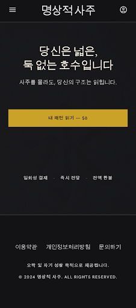
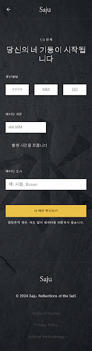
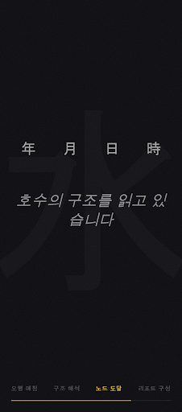
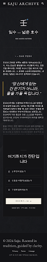
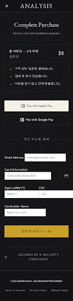
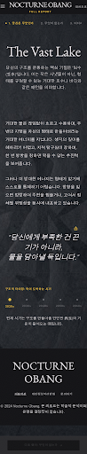
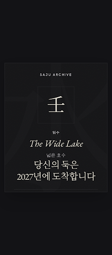
벤토 그리드 + 오방 5원소 타일 + "REGISTRY NO." 박물관 카탈로그 무드. 색 시스템 확장성 최강. 히어로 타일의 빈 영역과 하단 아티팩트가 과제.
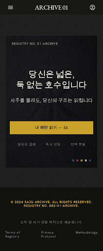
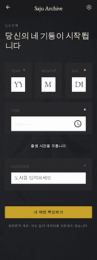
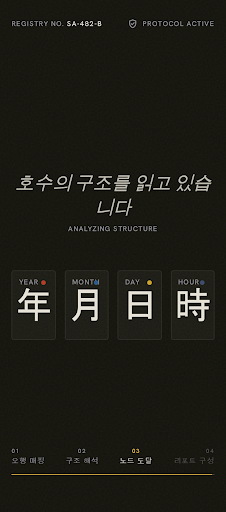
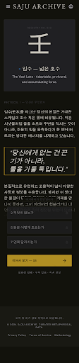
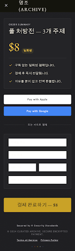
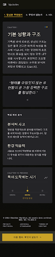
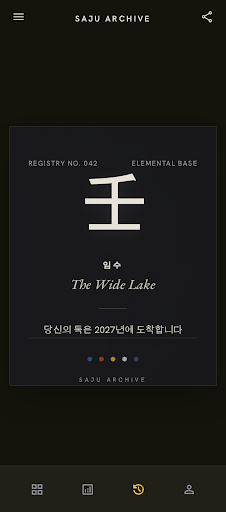
A의 무드 + C의 배지 스트립 + 공유카드 프리뷰·대운 타임라인까지. 서사가 완결되는 완결형. entry는 라이트 이탈로 1회 재생성해 다크 복원 완료.
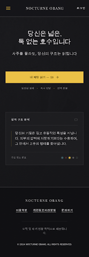
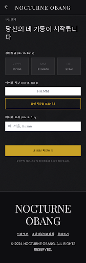
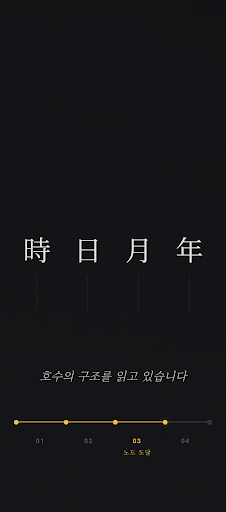
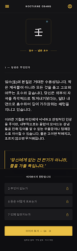
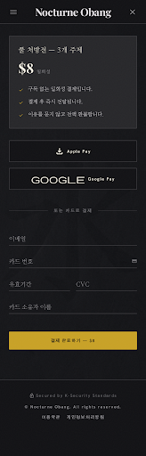
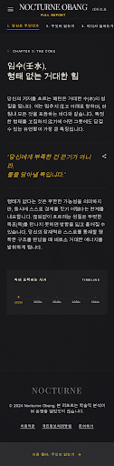
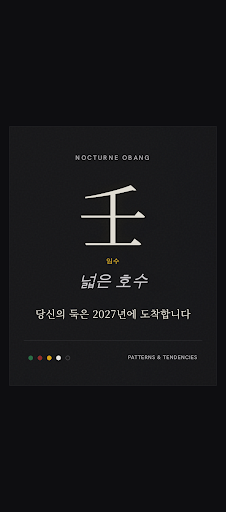
가중치: 공유 카드 30 · 신뢰 25 · 확장성 25 · 차별성 20 — product-analysis.md §6 판정 프레임.
| 방향 | 공유카드 /30 | 신뢰 /25 | 확장성 /25 | 차별성 /20 | 합계 | 한줄 |
|---|---|---|---|---|---|---|
| A Nocturne | 12 | 22 | 12 | 10 | 56 | 우아하지만 조용 — 후킹 부재 |
| C Obang | 18 | 18 | 24 | 16 | 76 | 시스템 최완성 — 히어로 공백 과제 |
| A+C Nocturne Obang | 27 | 20 | 22 | 18 | 87 | 완결형 — 채택 권장 |